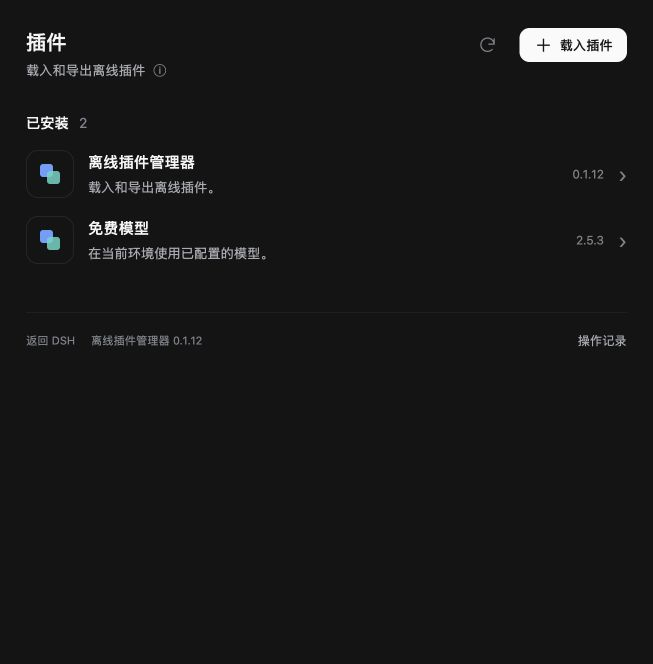
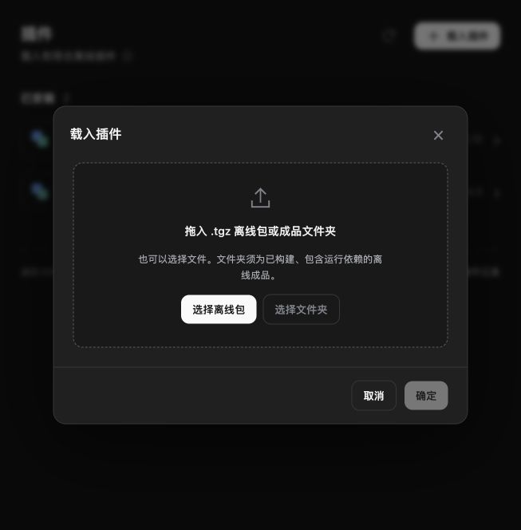
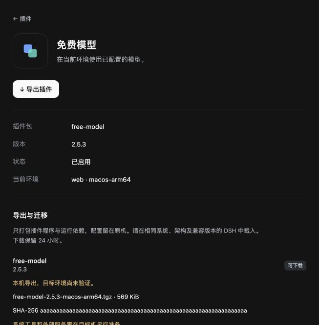

2026-10-23。按用户提供的官方插件页参考调整布局；最终范围仅为后来安装的第三方插件、离线载入和详情导出。官方插件、宿主内置组件与启停操作由原版 DSH 管理。
下方是实际 Svelte 页面截图，使用受控演示数据核对列表、弹窗和详情布局。已检查选择离线包后只准备、单次确定载入、Esc 关闭、详情导出入口；旧目录读取在关闭或重新选择后失效。



在独立配置目录运行原版 DSH 0.2.1-rc.2 Web，使用管理器的真实 HTTP 接口完成准备、安装和导出下载。未写入日常使用的配置；这次测试是隔离配置环境的功能测试，不作为 Windows/Linux 原生或操作系统断网验收结论。
查看真实宿主结果。最终完整测试：Web 14 项通过，管理器 152 项通过、3 项平台条件跳过，分发 122 项通过。独立代码审查已复核文件锁、目录回调及导出服务退出清理。